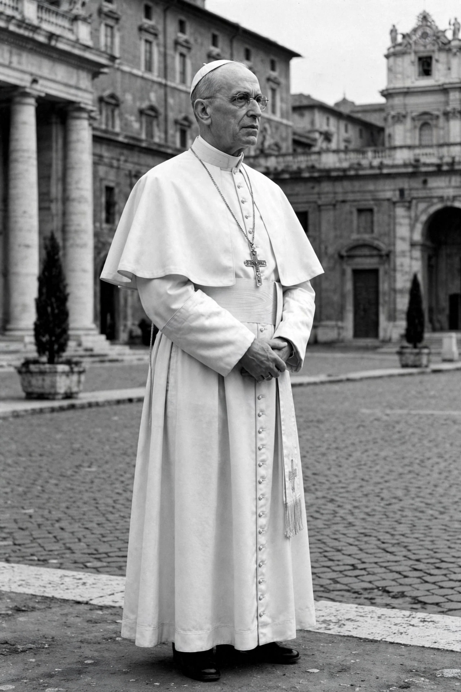

Pope Pius XII (Italian: Pio XII; born Eugenio Pacelli; 2 March 1876 – 9 October 1958) was head of the Catholic Church and sovereign of Vatican City from 1939 until his death in 1958.
A canon lawyer and Vatican diplomat, he was nuncio to Bavaria and Germany, negotiated the Reichskonkordat (1933) as Secretary of State under Pius XI, and travelled widely.
His wartime role remains controversial: he maintained diplomatic neutrality, organised relief and shelter for refugees including Jews in Vatican properties, but did not publicly denounce the Holocaust by name. Historians continue to debate his silence.
He defined the dogma of the Assumption of Mary in Munificentissimus Deus (1950), issued Humani generis (1950), authorised historical-critical biblical study in Divino afflante Spiritu (1943), excommunicated communists (1949), and used papal infallibility once. He centralised authority and opposed early liturgical experimentation.
His cause for canonisation is ongoing; he was declared Venerable in 2009.
See also: Pope Pius XI, World War II